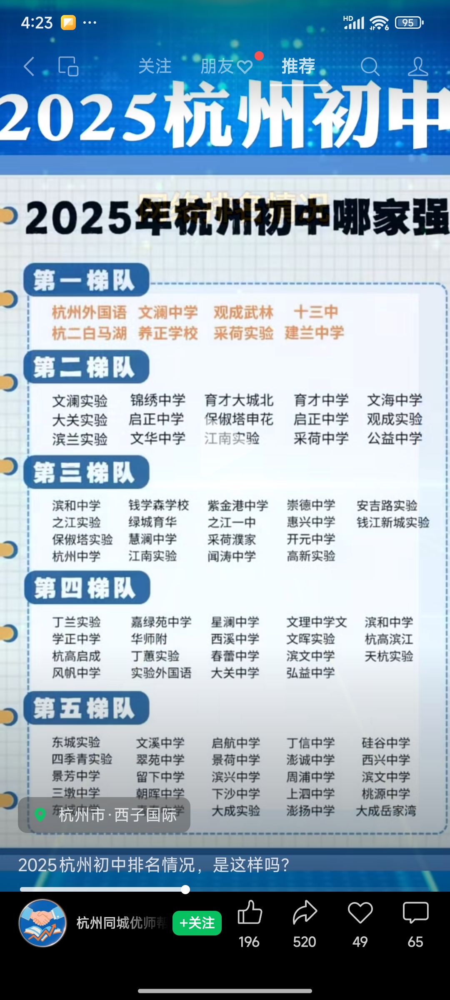

概述
- 本篇记录和总结一些学校数据
一 小学

二 初中
2025年初中排行

2024年重高生源分布
梯队
第一梯队（顶尖民办/公办）
-
文澜中学（拱墅区）：重高率36.46%，优高率82.33%
-
建兰中学（上城区）：重高率33.54%，前三率11.88%
-
育才中学（拱墅区）：重高率33.33%，优高率74.41%
-
杭二白马湖学校（滨江区）：重高率46.51%，前三率18.14%（民办转公后热度最高）
第二梯队（优质公办/民办）
-
采荷实验（上城区）：优高率79.5%，重高率32.5%
-
公益中学（西湖区）：优高率77.5%，分配生政策优势显著
-
锦绣中学（拱墅区）：重高率29.63%，摇号比例1.61:1
-
钱学森中学（上城区）：前三率10.55%，科技特色突出
第三梯队（区域强校）
-
十三中（西湖区）：重高率34.96%，公办“领头羊”
-
江南实验（滨江区）：优高率74%，规模大且均衡
-
保俶塔申花（西湖区）：重高率31.98%，实验班优势明显